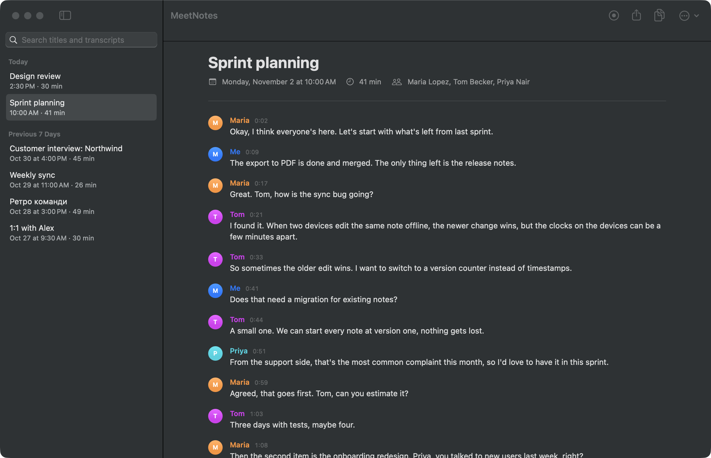
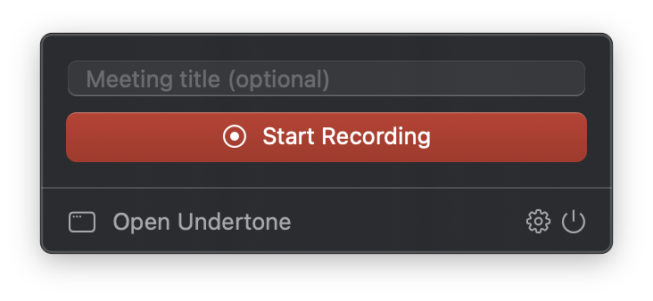
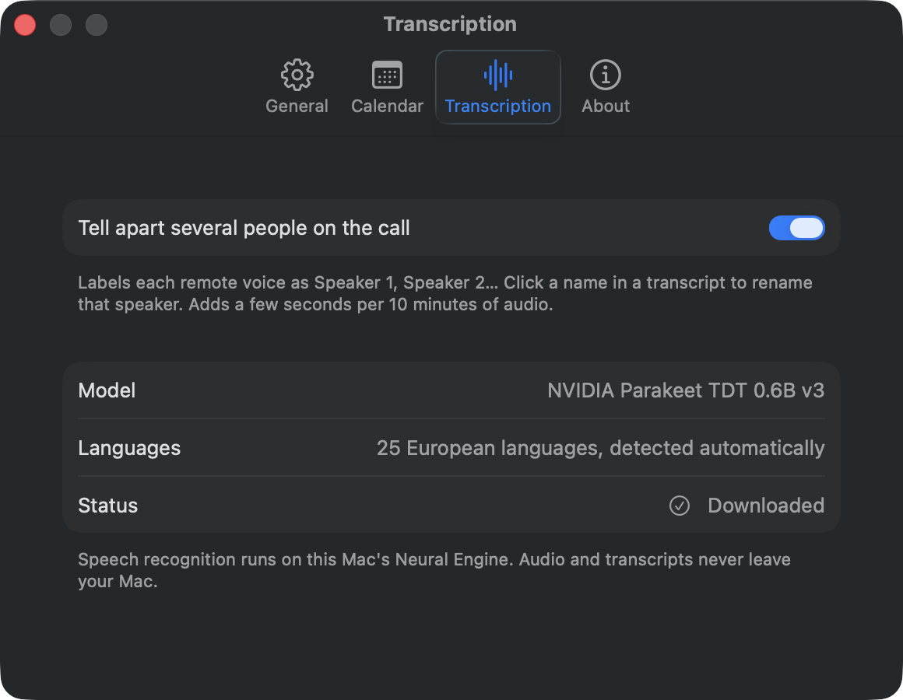

Undertone records your calls and turns them into a transcript of who said what. No bot joins the call, no account, no subscription. Everything runs on your Mac.
macOS 15 or later · Apple Silicon (M1 or newer) · Signed and notarized by Apple

It records your Mac's sound, so it works with Zoom, Google Meet, Teams, Slack or anything else. Nobody sees a "notetaker" join.
Speech recognition runs on the Neural Engine. Audio and transcripts are never uploaded anywhere.
No account, no trial, no minute limits. The code is open source under the MIT license.
Start recording from the menu bar. When you stop, the transcript is made right away. An hour-long meeting takes about a minute.
One click in the menu bar, or in the reminder you get when a calendar meeting starts.

Your mic and the call are recorded as two tracks. Forgot to stop? It stops by itself once the call goes quiet.
A timestamped transcript with every speaker labeled. Click a name to rename them.
English, Ukrainian, Polish, German, French, Spanish and other European languages, detected automatically. Powered by NVIDIA Parakeet.
Several people on the call get their own labels (Speaker 1, Speaker 2…). Rename them in one click, with suggestions from the calendar invite.
When your mic picks up the call from your speakers, Undertone removes that echo, so lines aren't duplicated.
Shows your meetings from the macOS Calendar (Google, iCloud, Exchange, Outlook) and reminds you to record when one starts.
Each meeting is a folder with the audio, transcript.md and transcript.json. Drop it into your notes app or an AI assistant.
It only asks for the microphone and "System Audio Recording Only". English and Ukrainian interface, automatic updates.
There is no Undertone server. Recording, echo removal, speaker separation and speech recognition all happen on your Mac.
~/MeetingNotes
I built Undertone to solve my own problem: I couldn't find a decent free app that transcribes meetings without a bot or a cloud. It's a side project, so sharing it costs me nothing. There are no paid plans and no catch.
No. Speech recognition runs on the Neural Engine of Apple Silicon chips, so you need an M1 or newer.
Any of them: Zoom, Google Meet in the browser, Microsoft Teams, Slack huddles, FaceTime, Discord. Undertone records what your Mac plays, not a specific app.
Not yet. The transcript is made right after you stop recording, which takes about a minute for an hour-long meeting.
Only if you connect it in Settings → Google, which arrives in the next update. Undertone then reads your Google Calendar (read only) to show upcoming meetings with their attendees and Meet links, and, when you choose Save to Google Docs, creates a Google Doc with the transcript. It can only see the documents it created, never the rest of your Drive. Everything goes straight between your Mac and Google; nothing is sent to the developer. Details are in the privacy policy.
In ~/MeetingNotes, one folder per meeting with the audio and the transcript as Markdown and JSON. You can change the folder in Settings, and delete anything any time.
Yes, please do. Recording others may require their consent where you live, and it's polite anyway.
Open an issue on GitHub. For transcription problems, mention the meeting language and whether you used headphones. Feedback of any kind is very welcome.